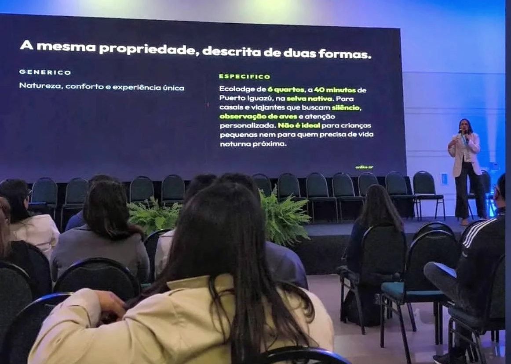

Buenas reseñas.
Pocas consultas.
Puede ser una temporada floja que nadie sabe explicar, la dependencia de un solo canal, o un producto que en persona es excelente y en pantalla parece uno más. Analizo cómo tu proyecto es encontrado, entendido, comparado y validado durante el recorrido digital del viajero, y dónde se están perdiendo las consultas antes de llegar a vos.
Alojamientos, experiencias y proyectos turísticos que ya funcionan
La reserva no se pierde
en el botón de reservar.
Se pierde bastante antes. Cuando el proyecto no entra en la lista de opciones que el viajero considera. Cuando entra, pero no se entiende qué es ni para quién. Cuando el sitio, Google, las plataformas, las reseñas y las redes cuentan versiones distintas del mismo lugar. Cuando el precio se compara sin que se entienda qué incluye. Cuando una fortaleza real existe, pero está escondida.
En turismo casi toda la decisión se toma a distancia y por adelantado: semanas antes, sin haber pisado el lugar, con lo que se encuentra en una pantalla y con lo que cuenta alguien que ya fue. No hay vidriera ni cartel que corrija eso después.
Y la etapa donde se define es la que casi nadie mira: la consideración. Lo que queda afuera de esa lista corta no compite por precio, ni por fotos, ni por reseñas. No compite. Y como nunca llega la consulta, tampoco llega la señal de que algo está fallando. Se siente como temporada floja.
Mientras la respuesta a una búsqueda era una página de resultados, quedar octavo todavía era quedar. Hoy la respuesta son tres nombres.
24%
de los viajeros ya usa IA generativa para planificar. Era 8% en 2023.
Deloitte, 2025
78%
de los que la usaron dicen que les sirvió para planificar o moverse en destino.
Phocuswright
8%
se siente cómodo reservando directamente desde una IA.
Expedia Group
Ese último número es el que ordena todo lo demás. La IA todavía no se lleva la reserva: te da o te quita el lugar en la lista. Después el viajero entra igual a tu sitio, a tu Google y a tus reseñas, y si ahí encuentra cosas que no coinciden, se va igual.
El problema no suele ser la calidad de lo que ofrecés. Es cómo esa calidad está traducida, conectada y comprobable en digital.
Sobre el tamaño real del mercado que queda: revisé los datos oficiales del turismo argentino de 2019 a 2026, sobre fuentes del INDEC, ANAC, CAME y Parques Nacionales. Cuánto bajó realmente el turismo en Argentina →
No audito canales sueltos.
Reconstruyo el recorrido de decisión.
Cada diagnóstico se adapta al tipo de proyecto, su mercado y su escala. Recorro el negocio como lo recorre el viajero, y también como lo lee una máquina: las mismas señales que confunden a una persona confunden a un buscador, y las que aclaran, aclaran para los dos.
01
Consideración y demanda
Qué viajero tiene afinidad real con tu propuesta, qué busca, qué valora y dónde planifica. Y qué parte del problema es del mercado y qué parte se corrige desde adentro.
02
Propuesta y legibilidad
Qué entiende alguien que llega sin conocerte: qué es, para quién es, qué incluye, dónde queda, por qué vale lo que cuesta y en qué se diferencia.
03
Ecosistema digital
Sitio web, Google Business Profile, mapas, redes, WhatsApp, buscadores y plataformas de reserva. No si existen, sino si trabajan juntos.
04
Reputación y confianza
Reseñas, fotos, menciones externas, medios, directorios y plataformas del nicho. Qué celebra el huésped, y si eso aparece en tu comunicación.
05
Comercialización y fricciones
Qué pasa entre el interés y la confirmación. Precios, políticas, formas de pago, tiempos de respuesta, canales directos, intermediarios y operadores.
06
Buscadores e inteligencias artificiales
Cómo Google y las IAs te encuentran, interpretan y comparan. La pregunta no es solo si te nombran: es qué señales encuentran para justificar una recomendación.
No reviso plataformas para llenar un informe. Investigo las que pueden cambiar una decisión.
Cuando el producto ya existe
y algo no termina de cerrar.
- Hay meses de baja ocupación y no está claro cuánto es del mercado y cuánto es tuyo.
- Tenés buenas reseñas y pocas consultas.
- La experiencia real es mucho mejor que lo que muestran la web y las plataformas.
- Hay actividad en redes pero nadie sabe qué impacto tiene.
- Dependés demasiado del boca a boca o de un solo canal.
- Te comparan por precio sin que se entienda qué incluye.
- Google, las plataformas, las redes y el sitio muestran versiones distintas del mismo lugar.
- Tenés fortalezas, menciones o credenciales que no estás usando.
- Estás por invertir en publicidad, en una web nueva o en contenido, y todavía no hay diagnóstico.
No hace falta llegar con el problema identificado. El trabajo empieza justamente por ahí.
Me pasa esto →Investigación real
y prioridades, no una lista de errores.
01
Recorro el proyecto como lo haría el viajero
Busco, comparo, consulto, reviso plataformas y leo reseñas desde distintas situaciones de búsqueda y en los idiomas de tu mercado. No parto de lo que el negocio dice de sí mismo.
02
Cruzo lo que se cree con lo que está pasando
Antes de mirar un solo canal te hago un cuestionario sobre cómo funciona el negocio desde adentro. Después comparo eso con lo que muestran las plataformas, los huéspedes, los buscadores y los competidores. Ahí aparecen las brechas que no se ven desde adentro.
"Nos falta gente porque estamos lejos."
El competidor no gana por estar más cerca. Gana por señales acumuladas durante veinte años.
"La plataforma nos convierte poco."
Tres razones concretas, todas identificables y todas corregibles.
"Somos rústicos, es parte del encanto."
Esa palabra estaba abaratando un producto premium, y se repetía en todas partes.
03
Ordeno por impacto, no por moda
No todas las correcciones pesan igual. La hoja de ruta separa lo que puede traer o destrabar consultas, lo que evita perderlas, y lo que es una mejora de base necesaria aunque sola no llene habitaciones.
Un diagnóstico para decidir,
no para archivar.
- Diagnóstico del estado actual, con los hallazgos explicados y su evidencia.
- La lectura del recorrido digital de tu viajero.
- Las brechas entre producto, comunicación y comercialización.
- Las oportunidades que estás desaprovechando.
- Acciones concretas ordenadas por prioridad e impacto.
- Hoja de ruta para corto, mediano y largo plazo.
- Reunión de devolución para trabajar los hallazgos centrales y las decisiones pendientes.
Primero entendemos qué está pasando. Después decidimos qué merece tiempo, inversión o acompañamiento.
Según lo que aparezca, la implementación la puede llevar tu equipo, quien maneja hoy tus redes, o yo. Y cuando lo que hace falta es que el equipo aprenda a sostenerlo, trabajo con mentorías y capacitaciones. Eso se define después del diagnóstico, no antes.
Un producto valioso puede estar perdiendo
antes de recibir la consulta.
Un ecolodge con años de trayectoria, reputación sobresaliente y huéspedes que vuelven, atravesando temporadas de baja ocupación que nadie terminaba de explicar.
El relevamiento mostró que el contexto turístico no alcanzaba como explicación. Aparecieron una credencial excepcional dentro de una plataforma internacional de nicho que no se usaba como argumento comercial; una web que mostraba el alojamiento pero no lograba explicar la experiencia; una diferencia grande entre lo que vendía muy bien la respuesta privada a una consulta y lo que comunicaban los canales públicos; fricciones de pago y confianza en una plataforma de reservas; autoridad acumulada en medios, guías y fuentes externas, pero desconectada; competidores digitalmente más instalados aunque no mejores en producto; y dos líneas de negocio compartiendo los mismos canales, debilitando la claridad de las dos.
El diagnóstico cambió la pregunta. Ya no era publicar más ni hacer publicidad, sino entrar mejor en la consideración del viajero correcto, con una identidad clara y menos fricción hasta la reserva.
El valor ya existía. El trabajo fue encontrar dónde se apagaba y cómo volverlo legible.
Turismo, estrategia digital
y negocios reales.
Soy Laura Silvester, licenciada en Turismo por la Universidad Nacional de Misiones, docente de marketing turístico en nivel superior y fundadora de Onlike. Mi recorrido combina formación turística, experiencia en gestión hotelera y trabajo estratégico con negocios que funcionan de verdad.
Esa combinación cambia la forma de analizar un proyecto turístico. No miro solamente si una cuenta publica, si una web carga o si una marca aparece en una búsqueda. Miro cómo funciona la propuesta dentro del sistema turístico: qué espera el viajero, cómo valida, con qué compara, qué intermediarios intervienen y qué obstáculos frenan la elección.
En junio de 2026 diserté sobre inteligencia artificial y comportamiento del viajero en el Fórum Internacional de Turismo do Iguassu, en Foz do Iguaçu, ante estudiantes y docentes de turismo de Brasil y Argentina.

La tecnología aporta herramientas. El criterio turístico permite hacer las preguntas correctas.
¿Tu proyecto se está entendiendo
como vos creés?
Siete preguntas para revisar si tu sitio, tu Google, tus plataformas y tus reseñas cuentan una historia clara y consistente. No reemplaza un diagnóstico, pero deja ver señales que desde adentro pasan inadvertidas. Está abierto, no hay que dejar datos, y al final te da un puntaje.
Hacer el checklist →Lo que siempre
me preguntan.
¿Es una auditoría de redes sociales?
No. Las redes pueden formar parte, pero el diagnóstico estudia el ecosistema completo: el recorrido del viajero, la propuesta, el sitio, las búsquedas, los mapas, la reputación, las plataformas de reserva, el contacto, la comercialización y las señales externas.
¿Trabajás solamente con hoteles?
No. Se aplica a alojamientos, ecolodges, cabañas, hosterías, glamping, agencias de viaje, turismo receptivo, guías, excursiones, experiencias y restaurantes con público turístico. El alcance cambia según el modelo de negocio.
¿Incluye posicionamiento en inteligencias artificiales?
Sí, cuando es relevante para el caso. Se analiza cómo Google y las IAs te encuentran, interpretan y comparan. Es una capa del diagnóstico, junto con el sitio, las plataformas y las reseñas. No es el centro del servicio.
¿El diagnóstico incluye la implementación?
Incluye las acciones recomendadas y su orden de prioridad. La implementación se define después, según lo que aparezca y con qué cuente el proyecto para ejecutarlo: puede hacerla tu equipo, quien maneja hoy tus redes, o yo. Cuando lo que hace falta es que el equipo aprenda a sostenerlo, trabajo con mentorías y capacitaciones.
¿Cómo se define el alcance y cuánto sale?
A partir de una primera conversación sobre el proyecto, su situación, sus mercados y la pregunta que necesitás responder. No todos los casos requieren revisar las mismas plataformas ni el mismo nivel de profundidad. Arranca en $300.000 y se define caso por caso.
¿Y si mi negocio es más chico que esto?
Tengo una revisión de entrada, Cómo te ve un viajero: cinco lugares donde el turista te mira antes de decidir, un documento escrito y una lista de qué cambiar primero. Alcance fijo, sin reunión, $90.000. Es para cabañas, alquiler temporario, guías, excursiones y agencias chicas.
¿Se puede trabajar de forma remota?
Sí. El relevamiento y la reunión de devolución se hacen completamente remotos, en todo el país. En Misiones y la región también trabajo presencial.
Antes de invertir más,
entendamos dónde está el problema.
Contame qué tipo de proyecto tenés, qué está pasando hoy y cuál es la duda que no lográs resolver. Con eso definimos si un diagnóstico es el paso adecuado y qué alcance tendría sentido.
No hace falta preparar una presentación. Con explicar qué está pasando alcanza para empezar.